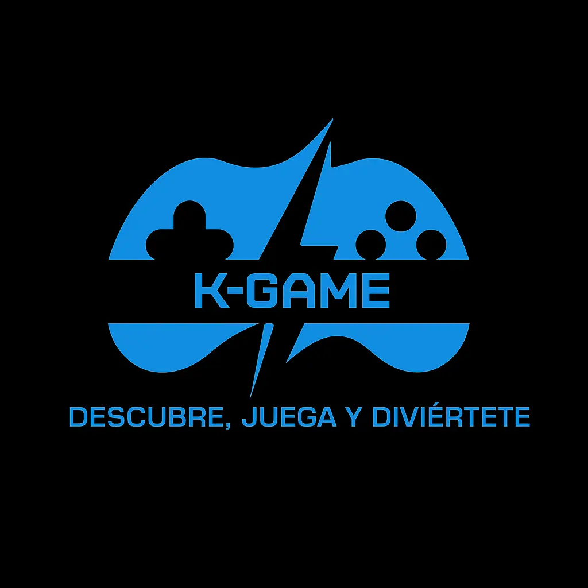

Descubre, juega y diviértete. Encuentra las mejores recomendaciones y noticias del mundo gamer. En K-Game creemos que jugar es más que entretenimiento: es explorar nuevos mundos, retarse a uno mismo y compartir experiencias con otros jugadores. Por eso, te ofrecemos un espacio donde podrás encontrar reseñas, novedades y recomendaciones personalizadas para que tu próxima aventura gamer siempre sea la correcta.
K-GAME 🎮
Bienvenido a K-Game
📖 Historia y origen de la idea
K-Game nació de la necesidad de conectar a jugadores de diferentes niveles con recomendaciones claras y confiables de videojuegos. La idea surge porque muchas veces las personas compran juegos sin saber si son adecuados para su edad, gustos o consola, y terminan abandonándolos.
🎯 Misión
Brindar a la comunidad gamer una plataforma confiable y entretenida, donde puedan descubrir nuevos juegos organizados por categoría, edad y estilo, además de acceder a noticias y reseñas relevantes.

👁️ Visión
Convertirse en un referente digital en recomendaciones gamer en Latinoamérica para el año 2030, siendo un puente entre jugadores casuales y expertos.
⭐ Valores
- Diversión: siempre priorizar la experiencia de juego.
- Inclusión: videojuegos para todas las edades y niveles.
- Confiabilidad: información clara y honesta.
- Innovación: integrar IA y nuevas tecnologías para mejorar la experiencia.
🔧 Características innovadoras del sitio
- Noticias en tiempo real: actualizaciones del mundo gamer (nuevos lanzamientos, eSports, tendencias).
- Reseñas y tops: listas de juegos destacados por categoría (acción, deportes, aventura, estrategia).
- Modo comunidad (a futuro): foro de discusión para que los jugadores compartan experiencias.
Sobre mí
Hola, soy Kevin Andrés Rodríguez Niño, tengo 15 años y soy un apasionado por los videojuegos 🎮. Me gustan especialmente los títulos de deportes, como EA Sports FC ⚽, F1 🏎️ y NBA 2K 🏀, porque transmiten la emoción real del deporte, la estrategia y la adrenalina de la competencia. Este sitio está hecho para compartir noticias, recomendaciones y experiencias gamer con todo tipo de jugadores, desde quienes apenas empiezan hasta los más experimentados. Con K-Game quiero crear un espacio donde cada gamer pueda descubrir nuevos juegos, mantenerse actualizado y, sobre todo, divertirse explorando este mundo que nos une a todos.
Recomendaciones de juegos

Acción
Los juegos de acción son un género de videojuegos que se centra en la rapidez, los reflejos y la coordinación del jugador. Suelen incluir combates, persecuciones o desafíos intensos que mantienen un ritmo dinámico y emocionante, haciendo que el jugador siempre esté atento y en movimiento. Algunos de los títulos más destacados actualmente son:
- Assassin’s Creed: Shadows
- Monster Hunter Wilds
- DOOM: The Dark Ages
- Metal Gear Solid Δ: Snake Eater
- Senua’s Saga: Hellblade II
- Ghost of Yōtei
- Borderlands 4
- Call of Duty: Black Ops 7
- Helldivers 2
- Ninja Gaiden: Ragebound

Deporte
Los juegos de deportes buscan simular disciplinas deportivas reales o fantásticas, permitiendo al jugador experimentar la emoción de competir en canchas, estadios o circuitos. Se centran en la estrategia, la habilidad y el trabajo en equipo, además de recrear de forma realista o arcade la pasión del deporte. Algunos títulos actuales destacados son:
- EA Sports FC 26
- Madden NFL 26
- NBA 2K26
- NHL 26
- MLB The Show 25
- PGA Tour 2K25
- WWE 2K25
- Rematch
- Tony Hawk’s Pro Skater 3 + 4
- Drag x Drive

Aventura
Los juegos de aventura destacan por su énfasis en la exploración, la narrativa y la interacción con el entorno. Invitan al jugador a descubrir mundos llenos de misterios, resolver acertijos y vivir historias profundas que combinan acción con momentos de reflexión. Son experiencias inmersivas que mezclan exploración, desafíos y creatividad. Algunos títulos destacados actualmente son:
- Metal Gear Solid Δ: Snake Eater
- Eternal Strands
- Shadow Labyrinth
- Hell Is Us
- Metroid Prime 4: Beyond
- Ghost of Yōtei
- Indiana Jones and the Great Circle
- Donkey Kong Bananza
- Dragon’s Dogma 2
- The Midnight Walk

Estrategia
Los juegos de estrategia se centran en la toma de decisiones, la planificación y la gestión de recursos para alcanzar un objetivo. Pueden desarrollarse en tiempo real o por turnos, y ponen a prueba la inteligencia táctica y la capacidad de anticipar al rival. Son ideales para quienes disfrutan de pensar cada movimiento antes de actuar. Algunos títulos destacados actualmente son:
- Civilization VII
- Age of Mythology: Retold
- Frostpunk 2
- Jurassic World Evolution 3
- Anno 117: Pax Romana
- Heroes of Might & Magic: Olden Era
- Warhammer 40,000: Mechanicus II
- Triangle Strategy
- Two Point Museum
- Europa Universalis V